Live battlefield
ACT
Fisher's Bend
The live game today: a river valley, a contested ford, rival warbands, a shrine, floods, pileups, launches, recoveries, and goats doing things nobody planned.
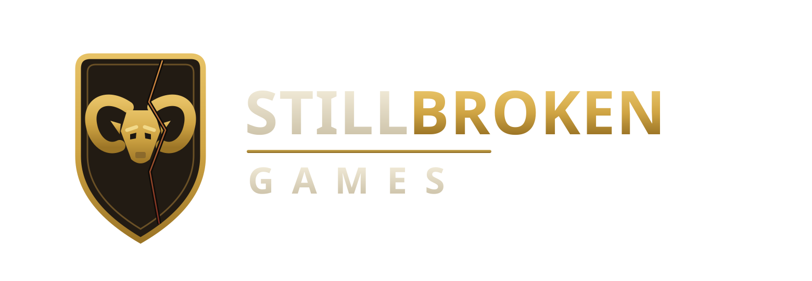
A game by Still Broken Games · Live on Roblox
GOAT Knight is a live multiplayer Roblox game about riding an enormous war goat into a battlefield that fights back. Charge downhill. Hit someone. Get launched into a river. Somehow recover. Ride home and tell everyone about it.
Live now · PC, mobile, tablet and console · free to play, no pay-to-win
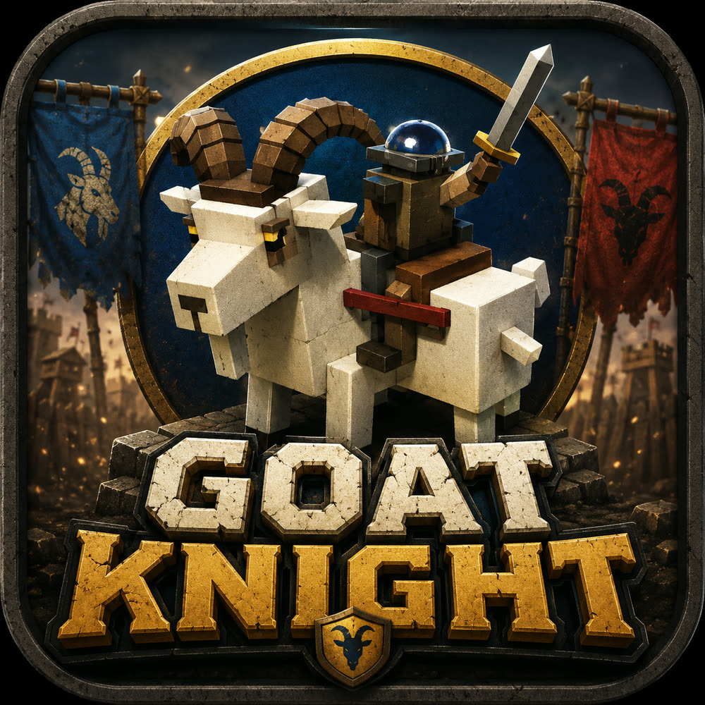
Ride badly · Fight gloriously
The short version
The story the game opens with — a thousand years ago, and slightly to the left of our own history.
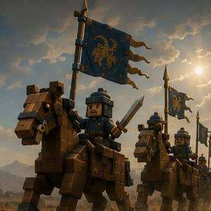
01
Horse riders ruled the steppe. Everyone else walked.
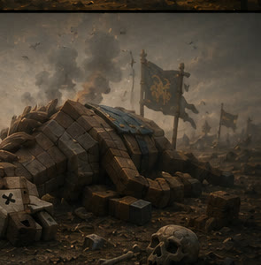
02
Then a plague took the horses. All of them.
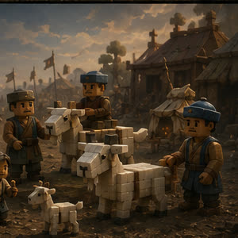
03
So people bred goats. Bigger. Then bigger. Then well past sensible.
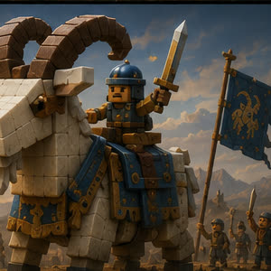
04
Now the cavalry has horns, a temper, and no interest in your plan.
Knights are small. Goats are huge. Everything downhill from there is physics.
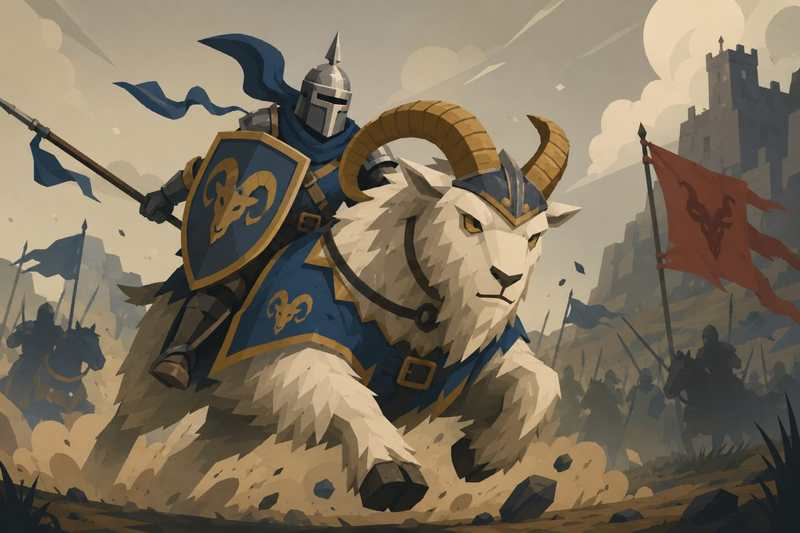
What you actually do
Two warbands, one contested river crossing, and a great deal of animal that does not steer like a vehicle. The ground decides more than your stats do.
From the live build · August 2026
Unretouched captures from the public build. GOAT Knight is in active development and the art pass is ongoing — what these show is that the systems are real and people are playing them today.
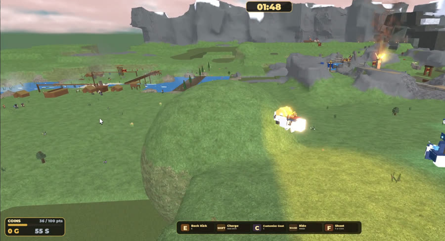
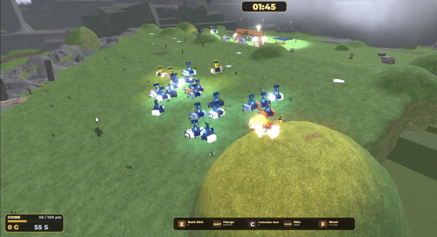
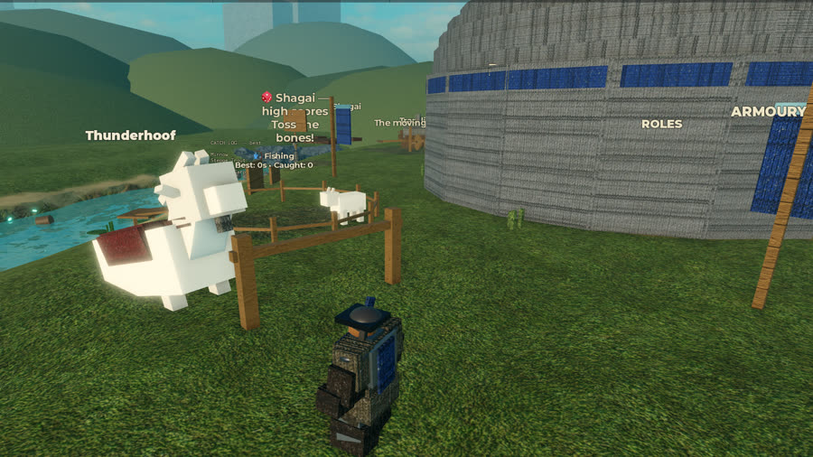
What we're aiming for
The best session doesn't end with a score. It ends with “remember when…”
Why anyone is fighting
Fisher's Bend is a mountain-fed river valley with a shrine, a fishing village, and exactly one ford a laden goat can cross. Everyone needs it. That was survivable, until it wasn't.
The River-Oath warlord died in a flood at the ford. His goat came home alone at dawn, empty saddle dark with river mud, the blue bell still tied and ringing.
Nobody can prove what happened. Whether the other family had a hand in it or the water simply took him, the valley has never settled — and the only witness was a goat, which is no witness at all.
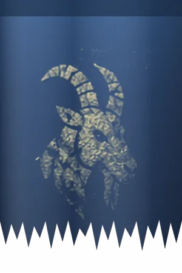
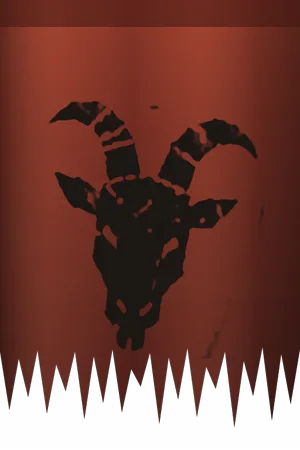
Caught in the middle: a village that would like everyone to stop trampling the fish racks.
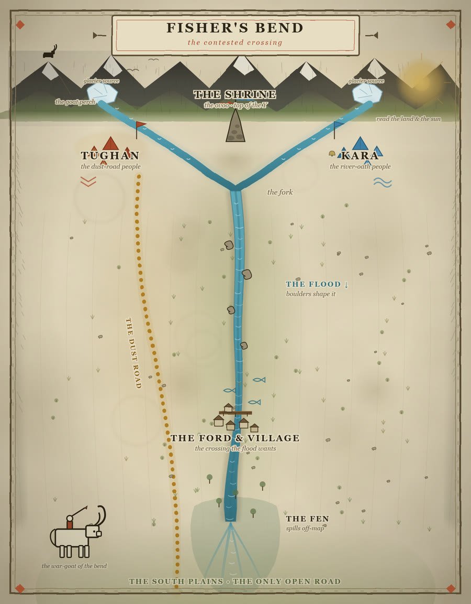
Beyond the first battlefield
At Fisher's Bend, everyone can see what you did. At your ger, you live with what came out of it. As the world grows outward, each new place should give you another reason to head back into a fight.
Live battlefield
ACT
The live game today: a river valley, a contested ford, rival warbands, a shrine, floods, pileups, launches, recoveries, and goats doing things nobody planned.
Live · your home
WHO AM I?
Home between fights. Your goat herd, your nökör companion, your armor and the history you've started making all live here. It's where the next ride starts to feel personal.
Being built and tested
WHERE AM I GOING?
A place for the journey itself to matter — a real ride between home and battle, with room for encounters, choices, wildlife and trouble along the way.
Where we're headed
WHAT HAPPENS NEXT?
Other battlefields, new regions, caravans, rivals, hunts, and places we haven't named yet. The point isn't a bigger map. It's more reasons to care about the ride back.
Battlefield→Ride outward→Something happens→Come back
If an adventure takes you away from the battlefield, it should give you a reason to care more when you return. Maybe you met someone, found a new route, lost a sure thing, changed your plans, or simply came home with a story you didn't have before.
The core trio
GOAT Knight follows the same rider, war goat and nökör companion through battle, travel, recovery and home. The goal is that you remember which goat you were riding when the ford went wrong, who was beside you, and what happened on the way back.
Still Broken Games LLC · Georgia, USA
Still Broken Games is a small independent studio shipping a live game to real players. We aren't building toward a launch date — GOAT Knight is already public, and every idea we have gets tested against people who don't know or care how it was made.
Ideas go in front of live players early and behind feature flags. The ones that create good stories stay. The ones that only looked good on a feature list get cut, quickly and without ceremony.
We run an AI-assisted development pipeline with automated verification on every build, across both game Places. It lets a very small team hold the surface area of a live multiplayer product without breaking it.
We prefer weight, consequence and player-made stories to systems designed to look good in a feature comparison. If a mechanic doesn't change what happens on the ground, it doesn't ship.
Get in touch
The fastest way to understand GOAT Knight is to ride one. It's free, it takes a minute, and the goat will do something you didn't expect.